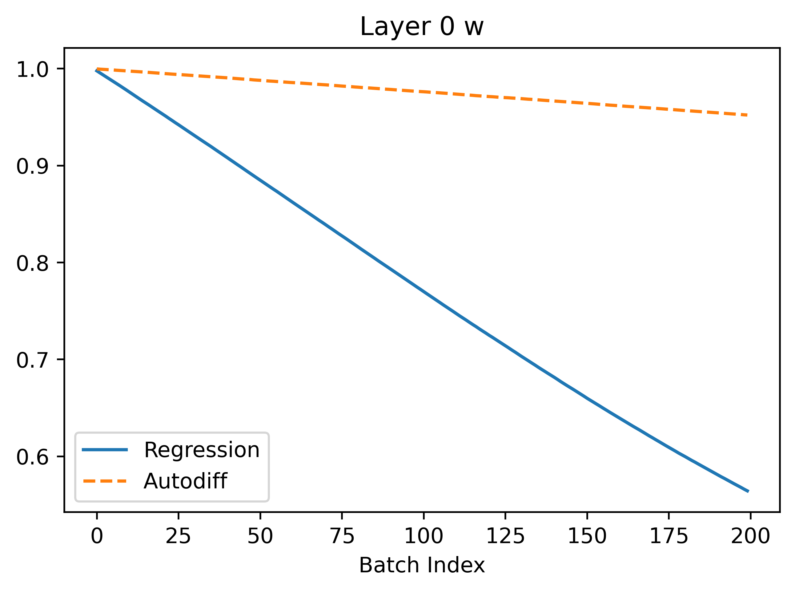

New Techniques on SNNs
Introduction
My previous work has been focused on training Biological Neural Networks (BNNs). In this work, we have developed a number of new techniques aimed at extending backpropogation to these more complex cases where the loss landscape may be very unstructured or discontinuous (see this article).
In this article, I will try to use similar analysis to garner insight into SNNs and attempt to apply the methods I developed for BNNs to SNNs. There are a number of possible applications of these methods to SNNs. For example, the neuron models in SNNs technically posses discontinuities so a notion of approximate gradient is usually used, but the methods I developed that do not backpropogate directly could alternately be used without having to address the discontinuity. Another application: I believe there are likely many situations in which LIF neurons will demonstrate a very chaotic loss landscape as in the case of BNNs, which is the case my smoothed gradient methods attempt to solve. Finally, after a quick look, it appears that vanishing gradients is an issue in very deep SNNs. My approximate gradient notion could be used potentially to solve this issue.
Unlike conventional backpropogation, which scales well with width of neural network but not necessarilly with depth (number of layers), my methods scale the complete opposite way: increase width puts a high demand on number of samples for the methods to work, but increasing depth has zero effect. Leveraging this relationship could elucidate some possible uses of my techniques.
Simple Cases
My first aim will be to reproduce the analysis I did for a BNN with spiking neurons instead of biological ones. In this section, I will do this for the simple first cases: a single neuron that we try to turn off, a self-coupled neuron we try to turn off, where in both cases we also analyze how things change when we add or remove noise.
Single Neuron
We define the loss to be the mean activity over a simulation timeframe (2000 timesteps in this case, as with the BNN), so that we are trying to turn the neuron off. Here is the resulting loss landscape if we have an input that is uniformly 1 scaled by a single weight parameter \(w\). In the LIF model, there is a parameter \(\beta\) that is regulated by the ratio of how fast neurons fire relative to the timescale setup by the dt used.
Let's have a look at the loss results and some representative traces with varied \(\beta\) values (0.3, 0.6, 0.9; it should be between 0 and 1):
As we can see, the loss is more unstructured in the case where we have a longer time between spikes. This makes sense to me because in this case we see less spikes, so each individual spike can have more of an impact on the loss. When we are integrating the output of the neurons over time, it is clear that neuron spikes will induce discontinuous spikes in the loss. In the case of Hodgkin-Huxley, we still see substantially less spiking than in LIF because the duration of spikes is longer and they occur less regularly.
We can see in some plots that the loss is completely flat. For example, in the case \(\beta = 0.3\) between \(w = 0.8\) and \(w = 0.9\). This should theoretically impede training. REPEAT MANY NOISY TRIALS TO FIX THIS FOR REGRESSION, NOT FOR AUTODIFF
Let's have a look what happens when we try to train the neuron to turn off using autodiff and the regression method from my previous article. I set \(\beta = 0.3\) here because this case seems to have a more difficult loss landscape (batch size is 1).
In the above, we can see that regression seems to converge better because the gradients are larger leading to faster convergence. The gradients are more noisy which makes sense because the method is based on random sampling.
The autodiff results, after some careful consideration, appear very weird! If we look at the loss curve in the bottom right corner, at certain points like 0.8-0.9 the gradient appears to be 0. However, when \(w\) is in this range during training the gradient proposed is non-zero (it's actually around 2.0 at batch index 100). We might think that maybe the gradient is just more clear if we zoom in a lot and it only appears flat locally. However, if we zoom in this is clearly not true:
As can be seen, the curve is completely flat and if we compute the gradient manually by finite difference it is completely zero, no matter how much we zoom in! However, note that the gradient computed with the method in snn-torch is 0.184! This is a very big discrepancy suggesting that something weird is happening. In particular, snn-torch used a surrogate method to compute the gradient, so it is not exactly the same as if we manually compute the gradient by eye looking at the loss curve.
Investigating Surrogate Gradient
Let's try and understand how the surrogate gradient seems to work so effecitvely in the case above even though using the actual gradient should cause the neuron to be completely untrainable. The surrogate gradient method I am using is "fast sigmoid." Details are in this paper: SuperSpike: Supervised Learning in Multilayer Spiking Neural Networks. Below is a plot of the voltage of the neuron and the corresponding surrogate gradient derivative:
One thing we can do is look at the loss landscape using the surrogate neuron model for evaluating loss integrals instead of the original model. Here's what we get:
This gives a pretty clear answer to how the surrogate gradient is fixing things. In particular, we can see that instead of having flat loss nearly everywhere the loss curve is smooth with a positive slope! This means that when we use it for gradients we can do gradient descent correctly with autodiff.
Adding Noise
My goal with exploration of the SNN case is to identify places where our method outperforms or complements autodiff with surrogate gradients. One of the most clear applications in my view is using noisy neurons in the SNN. In particular, adding white noise to each LIF neuron unit in the network. This is quite a motivated change for biological applications as one example. In real biological contexts, neurons are noisy and do not have simple deterministic firing patters. Thus, if we were, for example, to learn how to reproduce spiketrain data from biological recordings with SNNs, we would need to incorporate noise into the SNN and train the mean activity of the network (I think of this as fitting the distribution of all behaviors of the SNN to the distribution of the spiking data). In contrast, if we trained a non-noisy SNN to the data we are not accounting for the fact that small fluctuations in the recordings is typical and expected and instead trying to fit a deterministic stiff SNN to noisy data, which I believe would be less interpretable for things like latent space analysis and would likely do worse.
It turns out that autodiff does not do very well with noisy temporal neurons because there is no way to factor the noise into the chain rule over time, so small fluctuations at every timestep can lead to very different gradients than we should expect.

More Layers
Self-Coupled Neuron
MNIST
I used the useful snn torch package to train the SNNs. This package supports a number of different gradient methods such as zeroing gradient when neurons spike or using the surrogate gradient method which uses a smoothed differentiable model of the neuronto compute gradients. With this, we can directly compare between the sampling methods I introduced and backpropogation based learning. In all the MNIST stuff below, I am using a network with 28*28 input neurons, 100 hidden neurons and 10 output neurons.
Loss Landscape
First, we will start by doing a step that I think is far too overlooked in most machine learning papers: analyzing, even to just to a high level, the loss landscape that emerges from the SNN applied to MNIST.
Useful References
Todo
- Train to higher accuracy on MNIST on cluster
- Try gradient clipping with autodiff so we can compare autodiff to regression in accuracy plots
- Look for cases where BNN/SNN fail with autodiff
- Work more on NLB and write up initial results
- Look for more SNN applications